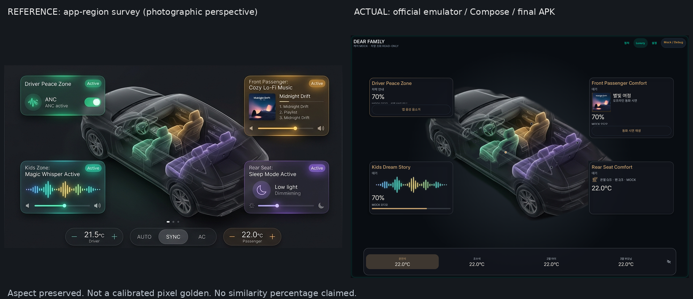
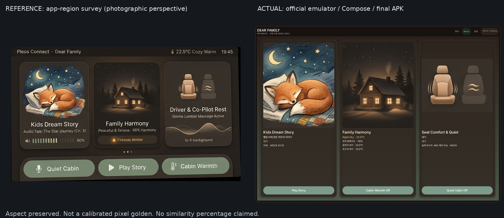
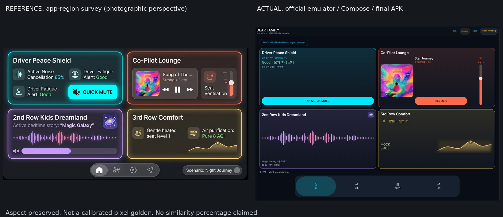

2026-11-12 · 앱 1682×1210px · density 1 · fontScale 1 · ko-KR. 원본 사진의 앱 영역과 실제 Compose 렌더를 비교합니다. 카메라 원근과 화면 비율이 달라 픽셀 골든이나 일치율이 아닙니다. 정적 Python 시안이 아닙니다.



TTS 초기화 실패로 실제 소리는 검증되지 않았습니다. 동화 본문 자막·제어는 별도 기기 테스트로 확인했습니다. 최종 시각 승인은 아직 받지 않았습니다.